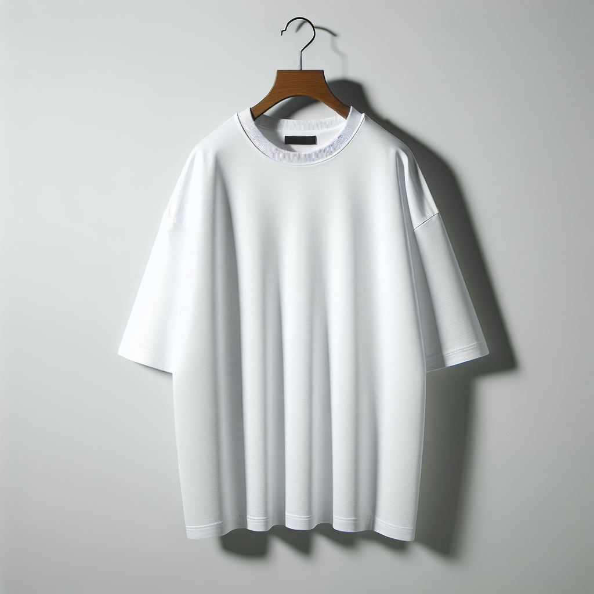
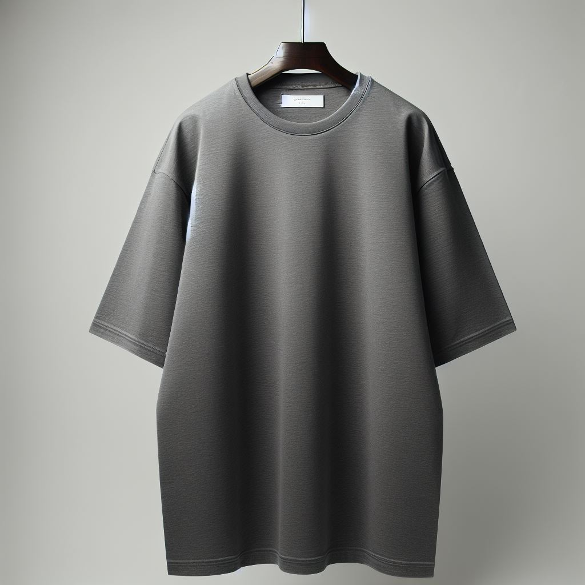
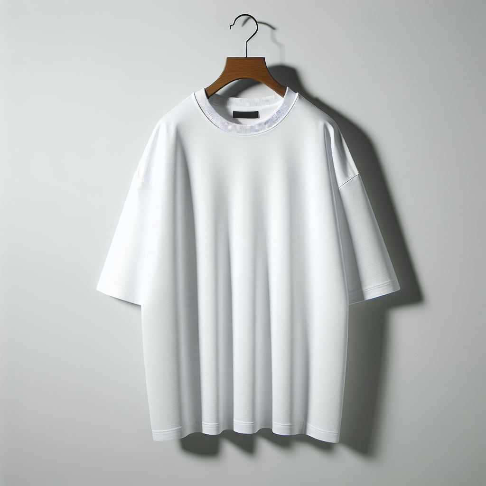
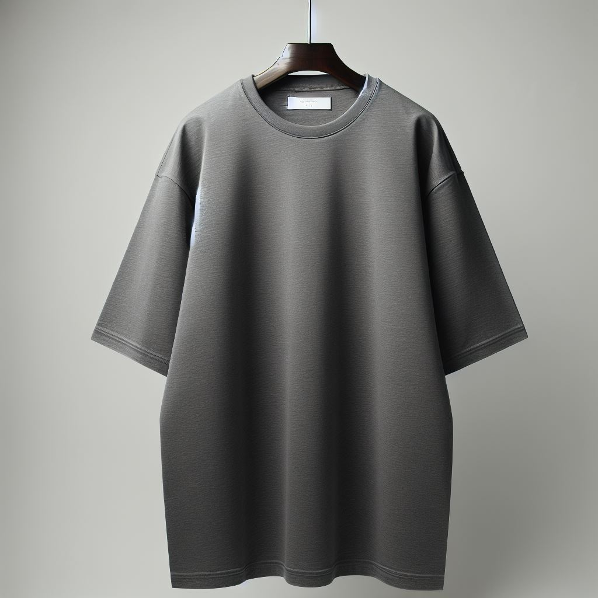

Deep Noir Tee
Crafted with precision and designed for those who value the art of simplicity, the Altruisme Black Premium Loose-Fit T-shirt is the epitome of elevated casual wear. Made for individuals who embrace understated luxury, this t-shirt redefines what it means to wear something minimal yet sophisticated.
Materials
Made from 100% premium, heavyweight cotton, this shirt combines comfort with durability. The fabric is soft yet resilient, offering an authentic, raw texture that only improves with time. Designed with a focus on breathability and softness, the t-shirt maintains a smooth matte finish, ensuring a polished look throughout the day.
Design & Fit
The Altruisme T-shirt embraces a relaxed, loose-fit silhouette that sits effortlessly on the body. Its oversized cut provides freedom of movement, perfect for layering or wearing on its own. A classic crew neckline adds a refined touch, while the slightly dropped shoulders enhance the relaxed, streetwear-inspired aesthetic. There are no flashy designs, logos, or prints—just pure, simple elegance.
Craftsmanship
Each piece is meticulously made to reflect the quality and artistry that Altruisme is known for. From the stitching to the fit, no detail is overlooked. The fabric has been carefully sourced and treated to ensure it’s both sturdy and comfortable, with the perfect balance of structure and softness. The clean edges and seamless construction allow the shirt to be worn on any occasion, whether dressed up with high-end accessories or paired with your favorite skater jeans for a more casual look.
Versatility
True to the Altruisme ethos of effortless luxury, this black t-shirt is a versatile wardrobe essential that transcends trends. Whether you’re lounging in comfort or stepping out for a night on the town, this t-shirt complements any look. Its timeless design works seamlessly with other pieces from the Altruisme collection, creating a wardrobe that speaks to those who value simplicity, sophistication, and a high-end skate-inspired aesthetic.
Fit Guide
- Loose-fit design for a relaxed, comfortable fit.
- Available in sizes XS to XL.
- We recommend selecting your usual size for a slightly oversized look or sizing down for a more fitted appearance.